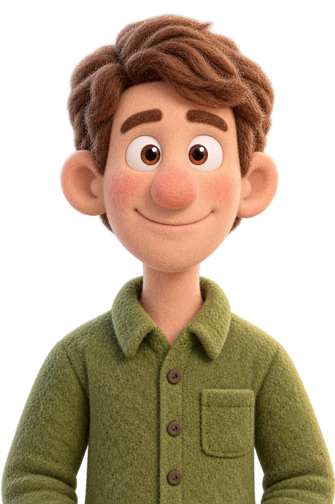

AI 内容创作者
一边学习 AI，一边把想法做出来
喜欢设计、绘图，也喜欢探索新工具。把好奇心变成具体的作品，记录并分享创作的过程。
既然选择远方，便只顾风雨兼程
移动鼠标，和我打个招呼 ↗
01 / 创作记录
学习的过程，也值得分享。
我的 AI 学习与创作记录，发布在抖音。
02 / 网页作品
从内容整理，到页面呈现。
把产品、品牌和制造场景，整理成清晰的网页展示。
把保研准备中的路线、材料和经验，整理成一个清晰易用的信息分享网站。
03 / 科研绘图
研究框架、技术路线与逻辑表达。